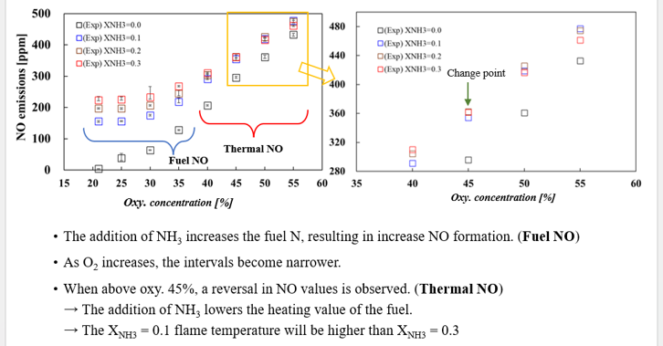
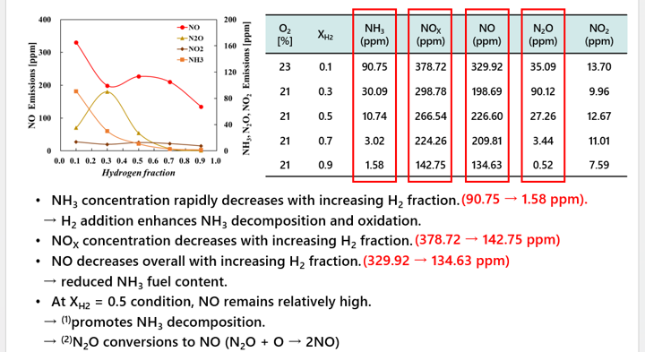
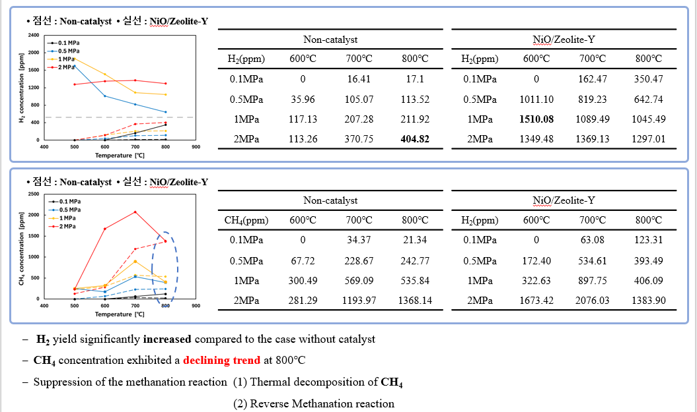

RESEARCH
Combustion & Pyrolysis
My research focuses on carbon-free combustion and waste-plastic pyrolysis through experimental investigation, chemical kinetic analysis, and material characterization.
1. COMBUSTION
COG/NH3 Co-Combustion
Laminar Jet Flame · Combustion Characteristics · Exhaust Emissions · NOx Formation
Experimental and numerical investigation of COG/NH₃ co-combustion under oxygen-enriched conditions, focusing on flame characteristics, exhaust emissions, and NOx formation mechanisms.

H2/NH3 Co-Combustion
Flame Structure · Radical Distribution · Chemical Kinetics
Investigation of hydrogen addition effects on ammonia diffusion flames, including flame structure, radical distribution, exhaust emissions, and chemical reaction pathways.

2. PYROLYSIS
Waste Plastic Pyrolysis
High-Pressure Pyrolysis · Gas Chromatography · Hydrogen Production
Experimental investigation of high-pressure waste-plastic pyrolysis with a focus on product gas composition and hydrogen production characteristics.

Catalytic Pyrolysis
Ni-Supported Catalysts · Catalyst Characterization · XRD
Investigation of Ni-supported catalysts for waste-plastic pyrolysis, including catalyst characterization and evaluation of their effects on hydrogen production.
